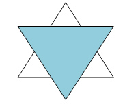

El propósito central del taller es generar un ámbito en el que el pensamiento matemático sea natural y hasta entretenido, y no la entrada a un mundo insondable. Pensar la matemática no ya desde lo escolar y extraño a los propios intereses, sino como un lenguaje que se puede aprender, disfrutar y hasta usar en la vida real En ese sentido, partimos de evitar los razonamientos mecánicos del tipo "A + B, entonces C".
La pregunta es: ¿Por qué, a través de qué caminos llegamos a C?
Explorar la matemática en su compleja riqueza, trabajar con ella como instrumento, desarrollando una metodología que les permita desentrañar el sentido más allá de la forma.
La propuesta es, entonces, trabajar desde la idea de que en todo problema hay un elemento oculto que debe encontrar el matemático, operando como un detective. En definitiva, entender que la matemática no es “un problema” sino un mundo a descubrir, en el cual uno podrá desplegarse y moverse con soltura si conoce sus mecanismos.
Un taller de pensamiento matemático es, además, un punto de encuentro entre quienes disfrutan la matemática y ponen en ella similares expectativas. El chico, de repente, se encuentra perteneciendo a un grupo en el que otros disfrutan, como él, de la matemática: la información comienza a circular, se discute por Whatsapp, se comentan ejercicios y se crean amistades basadas en afinidades comunes. La matemática deja de ser “eso raro y difícil que se ve en el cole” y se convierte en un placer compartido. La belleza, el desafío, la fascinación y la risa circulan en torno a esos objetos transformados ahora en herramientas para desarrollar un pensamiento propio.
La meta es, entonces, que los chicos produzcan sus propios problemas y/o sean capaces de resolverlos, entenderlos y compartirlos placenteramente, a veces por primera vez en su vida.
Composición y funcionamiento de los grupos
Los encuentros son semanales y duran dos horas. Se propone trabajar con grupos grandes, lo que da mayores posibilidades de intercambio y permite desarrollar actividades colectivas en las que el esfuerzo y la inventiva individual se ponen en contacto y se complementan con las capacidades del otro.
El funcionamiento de las reuniones gira en torno a juegos matemáticos. Los juegos son, en todos los casos, juegos, no ejercicios y menos todavía ejercicios disfrazados de juegos, aunque de ellos surja un posible aprendizaje. Se trata de un momento libre, creativo, sin exigencias, ni sugerencias.
Usamos dos tipos de juego:
Por un lado, los “acertijos matemáticos”, en el que, mediante ensayo y error, hay que encontrar la clave para resolver el ejercicio.
Un ejemplo sería el siguiente:
Un cliente de un bar pide cuatro litros de vino (y bueno, borrachos hay en todos los bares). El mozo le pide si no pueden ser 3 ó 5, pero el cliente insiste:
“¡Dije 4!”
Problema. En el bar solo hay toneles de 3 y de 5 litros.
¿Cómo hacemos para satisfacer al cliente y darle los 4 litros que pide?
Por el otro, los que llamamos “laberintos geométricos”, de este tipo:

Se trata de una figura compuesta por dos triángulos iguales, yuxtapuestos (vamos incorporando palabras), uno de ellos pintado, supongamos el de afuera, completo, ¿qué fracción de la figura es la pintada?
La opinión de la mayoría de los chicos, casi siempre, es que la fracción pintada es ½. Sin embargo…
En todos los casos, se divide al grupo en dos equipos y se arma un debate en cada uno. Luego, se comentan las conclusiones
Esta dinámica entre un momento de juego y otro de sistematización permite incorporar placenteramente las normas y convenciones que es preciso conocer y poner en juego en el momento de tratar con la matemática, y a la vez darse cuenta de las posibilidades que este fascinante lenguaje impone (como exigencia para entenderlo) y ofrece (como espacio de libertad).
La invitación está hecha. La propuesta nos parece interesante para enfrentar a los chicos a una problemática a la que no están habituados y así formarlos en una habilidad que han practicado escasamente.
¡Los esperamos!